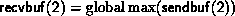

MPI_REDUCE( sendbuf, recvbuf, count, datatype, op,
root, comm)
[ IN sendbuf] address of send buffer (choice)
[ OUT recvbuf] address of receive buffer (choice,
significant only at root)
[ IN count] number of elements in send buffer (integer)
[ IN datatype] data type of elements of send buffer (handle)
[ IN op] reduce operation (handle)
[ IN root] rank of root process (integer)
[ IN comm] communicator (handle)
int MPI_Reduce(void* sendbuf, void* recvbuf, int count, MPI_Datatype datatype, MPI_Op op, int root, MPI_Comm comm)
MPI_REDUCE(SENDBUF, RECVBUF, COUNT, DATATYPE, OP, ROOT, COMM, IERROR)
<type> SENDBUF(*), RECVBUF(*)
INTEGER COUNT, DATATYPE, OP, ROOT, COMM, IERROR
MPI_REDUCE combines the elements provided in the input buffer of each process in the group, using the operation op, and returns the combined value in the output buffer of the process with rank root. The input buffer is defined by the arguments sendbuf, count and datatype; the output buffer is defined by the arguments recvbuf, count and datatype; both have the same number of elements, with the same type. The routine is called by all group members using the same arguments for count, datatype, op, root and comm. Thus, all processes provide input buffers and output buffers of the same length, with elements of the same type. Each process can provide one element, or a sequence of elements, in which case the combine operation is executed element-wise on each entry of the sequence. For example, if the operation is MPI_MAX and the send buffer contains two elements that are floating point numbers ( count = 2 and datatype = MPI_FLOAT), then and  .
Sec. Predefined reduce operations , lists the set of predefined operations provided by MPI. That section also enumerates the datatypes each operation can be applied to. In addition, users may define their own operations that can be overloaded to operate on several datatypes, either basic or derived. This is further explained in Sec. User-Defined Operations .
The operation op is always assumed to be associative. All predefined operations are also assumed to be commutative. Users may define operations that are assumed to be associative, but not commutative. The ``canonical'' evaluation order of a reduction is determined by the ranks of the processes in the group. However, the implementation can take advantage of associativity, or associativity and commutativity in order to change the order of evaluation. This may change the result of the reduction for operations that are not strictly associative and commutative, such as floating point addition.
[] Advice
to implementors.
It is strongly recommended that MPI_REDUCE be implemented so
that the same result be obtained
whenever the function is applied on the same arguments,
appearing in the same order. Note that this may
prevent optimizations that take
advantage of the physical location of processors.
( End of advice to implementors.)
The datatype argument of MPI_REDUCE must be
compatible with op. Predefined operators work only with
the MPI types listed in Sec. Predefined reduce operations
and Sec.
MINLOC and MAXLOC
. User-defined operators may operate
on general, derived datatypes. In this case, each argument that
the reduce operation is applied to is one element described by such a datatype,
which may contain several basic values.
This is further explained in Section User-Defined Operations
.